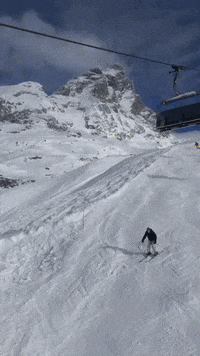
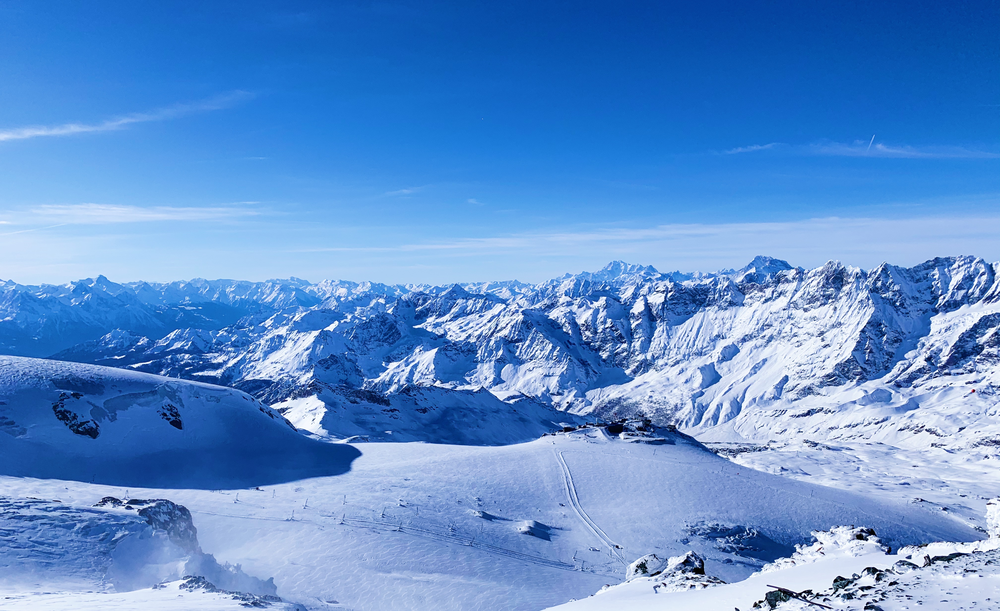

Sofia, Bulgaria


Geographical location: Europe
Sofia is the capital city of Bulgaria, a country located in Eastern Europe. It is part of the European Union and the primary language spoken is Bulgarian. The city’s population is around 1.3 million. In addition to its urban structures, Sofia also contains a mountain peak called “Vitosha”.
Vitosha is located 30 minutes from the capital center, and can be reached by foot, car, and by lift. The peak has an elevation of 7,520 feet and during the summer months the average temperature is around 64 degrees fahrenheit. This makes it a great sight for any type of traveler who seeks the outdoors.
Phone Gallery


Zermatt, Switzerland
 Geographical location: Europe
Zermatt is a beautiful place, with 365 degree views of the mountains. It’s known for its famous mountain “the Matterhorn,” which is visible from nearly everywhere in the town. The town is vibrant, filled with patrons walking around, shopping for the most high quality snow boots, eating hot Rosti and drinking wine.
The skiing in Zermatt is unparalleled. Every day in the winter you can find people skiing all day. When it snows, the mountain becomes even more crowded, with skiers flocking to the mountain from around the country and the world.
Phone Gallery


Barcelona, Spain


Geographical location: Europe
Barcelona, is a beautiful city on the Northeastern coast of Spain that is the byproduct of a rich and artistic history with modern infrastructure. One of the main attractions of the city is its gorgeous architecture, often the work of world renowned architects such as Antoni Gaudi. Some of the most notable works are the modern Basilica of La Sagrada Familia, and the tranquil and eloquent Park Güell.
Much of Barcelona’s charm comes down to local culture, from diverse culinary offerings, to the sunny vacation-ridden atmosphere of the beaches, and even the symbolism of nationalism and independence that Barcelona residents display. The passion of the locals is unwavering, including in famous soccer matches by one of the sports greatest clubs: F.C. Barcelona, and in numerous local artistry events. It is no wonder why many travelers to Spain feel rejuvenated and fortunate enough to have experienced the city’s irresistibly strong culture and atmosphere.
Phone Gallery


Nice, France


Geographical location: Europe
Nestled on the French Riviera, Nice exudes a unique blend of Mediterranean culture and French allure. French is the predominant language spoken, reflecting its status as a quintessential French city.
The local culture is a mix of traditional French elements and coastal influences, with highlights including the bustling Cours Saleya market and the picturesque Old Town.
Phone Gallery